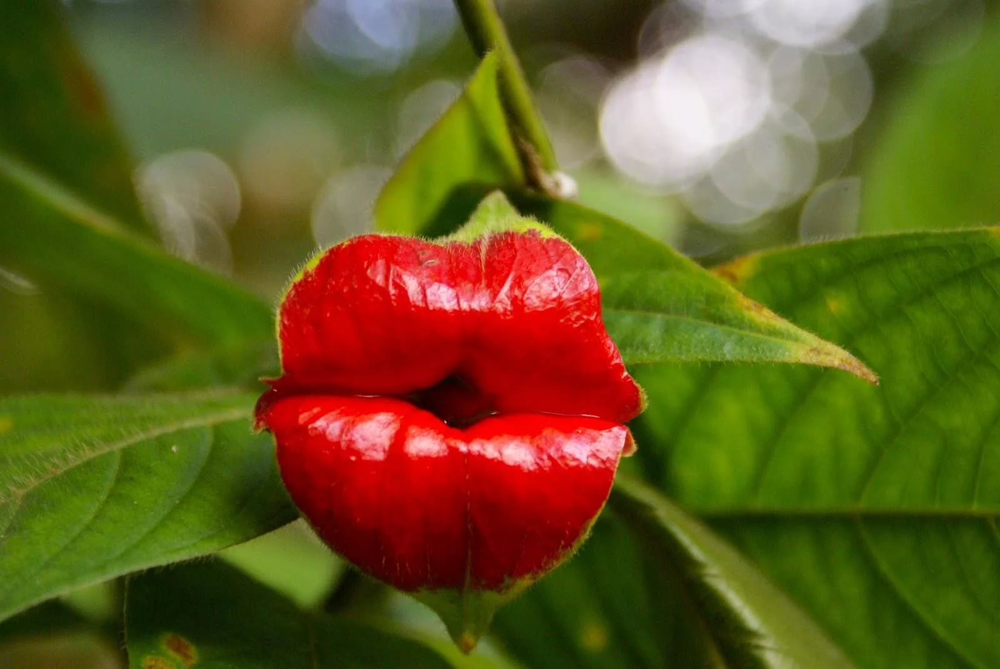

Психотрия возвышенная - травянистое двухлетнее растение, принадлежащее к семейству мареновых (Rubiaceae).
Психотрию возвышенную сложно встретить в продаже. Ее можно купить на специализированных сайтах в сети Интернет.
В дикой природе она произрастает в густых дождевых, очень влажных лесах, в подлеске и представляет собой невысокий кустарник. У нее широкие, изборожденные прожилками темно-зеленые листья длиной 10-15 см.
Это тропическое растение получило широкое распространение благодаря своим великолепным соцветиям, напоминающим пухлые женские губки. Особенная форма цветков формируется в первой фазе
Развития парой мясистых прицветников ярко-красного цвета. Затем в соцветиях появляются мелкие белые цветочки, а вслед за ними — плоды синего цвета.
Психотрию выращивают в помещениях. Для правильного развития ей необходимо создать условия, схожие с теми, в каких она растет в дикой природе.
Растению подойдет субстрат, состоящий из торфа, лиственного перегноя и универсальной садовой земли с несколькими пригоршнями крупного песка.
Чтобы обеспечить хороший дренаж и впитывание излишков влаги, на дно горшка выкладывают слой керамзита. В весенне-летний период в воду для полива рекомендуется раз в три-четыре недели добавлять жидкое удобрение для цветущих растений.
Психотрия предпочитает освещенное местоположение. Она может переносить воздействие прямых солнечных лучей только ранним утром или в вечерние часы.
Температура окружающей среды не должна опускаться ниже 16 ”С.Благодаря характерной форме полуоткрытых губ это растение получило множество интересных названий. Наиболее комфортно психотрии будет при комнатной температуре.
Психотрии необходим повышенный уровень влажности воздуха, поэтому помимо регулярных поливов необходимо опрыскивать ее листья декальцинированной водой.
Пересаживать психотрию не обязательно: она является двулетним растением, которое может провести свою жизнь в одном просторном контейнере.